작업 흐름
- 입력
- 주제 한 줄 (어느 문화의 어떤 생물에게 무슨 일이 일어나는가)
- 브리프
- 문화 시트(바위 · 나무 · 건물 · 문양 · 악기 · 장단), 박자표, 빛의 변화, 생물 시트, 샷 목록
- 세계와 빛
- 높이 함수와 암봉, 호수와 폭포, 시간에 따라 바뀌는 룩(새벽 · 폭풍 · 일출), 깊이를 아는 구름과 안개
- 생물
- 영화 전체를 잇는 레일 하나, 비늘 격자, SDF로 빚은 머리 · 뿔 · 갈기 · 다리, 캐스트 시트와 몸 검사
- 출력
- HTML 한 파일(라이브 재생, 클릭하면 소리), 합성 사운드가 들어간 1920×1080 MP4
cd dragon-realm
node scripts/check.mjs examples/cheongryong # check OK
node scripts/render.mjs examples/cheongryong --cast --scale .5 # out/cast.jpg
node scripts/render.mjs examples/cheongryong --sheet --scale .33 # out/sheet.jpg
node scripts/score.mjs examples/cheongryong # out/score.wav
node scripts/render.mjs examples/cheongryong # out/film.mp4
node scripts/new-film.mjs ~/my-film # 새 영화 폴더요구 사항: Node 18+, Playwright Chromium, ffmpeg. GPU 없이도 렌더됩니다(4코어 CPU에서 1080p 한 프레임 3–6초). 라이브 재생에는 GPU가 필요합니다. 단계별 순서는 SKILL.md에 있습니다.
샘플
원본은 중국풍(카르스트 봉우리 · 붉은 전각 · 붉은 용과 흰 용의 싸움)입니다. 예제는 같은 스타일을 한국의 이야기로 새로 설계했습니다. 천 년을 기다린 이무기가 폭풍 속에서 여의주를 얻어 청룡으로 승천하고, 화면은 일월오봉도(해 · 달 · 다섯 봉우리 · 두 폭포 · 양옆의 소나무)에서 시작해 일월오봉도로 끝납니다. 카드를 누르면 라이브 페이지가 그 장면부터 재생됩니다.
청룡 · 여의주 84초 · 17샷 · 80bpm 12/8
화강암 오봉과 호수, 단청 누각, 소나무와 단풍, 대금 · 해금 · 가야금 · 장구 · 징. 새벽 → 폭풍 → 일출로 빛이 바뀝니다.
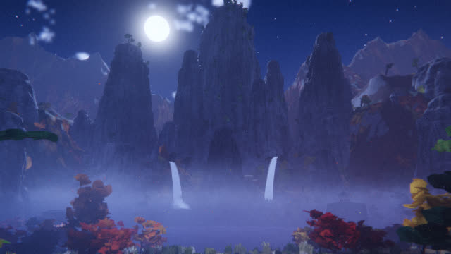
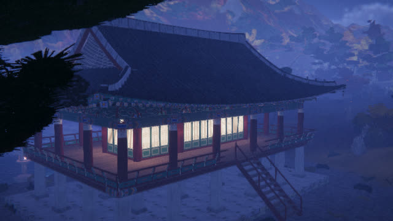
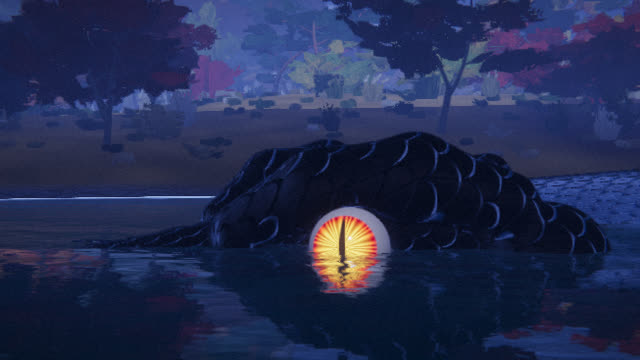
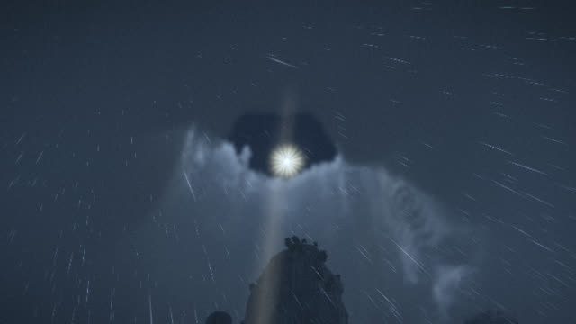
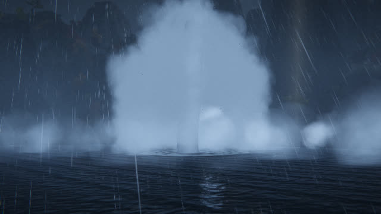
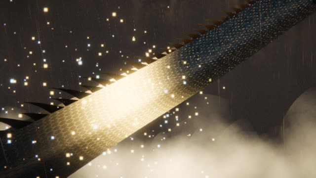
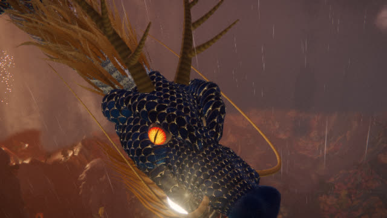
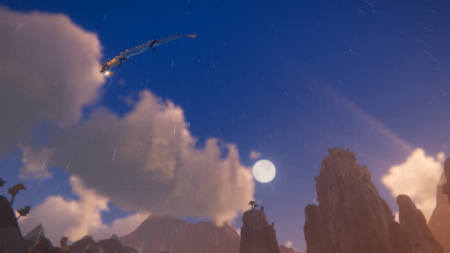
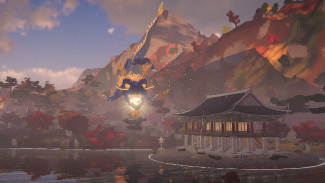
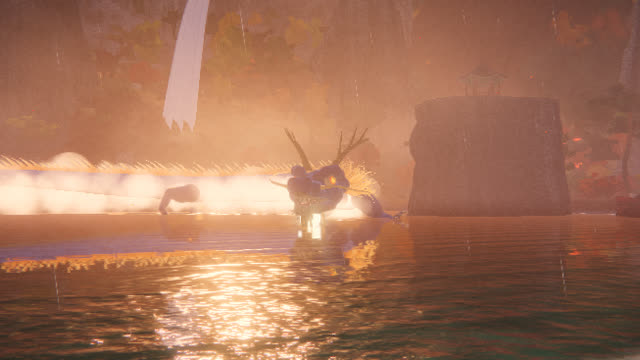
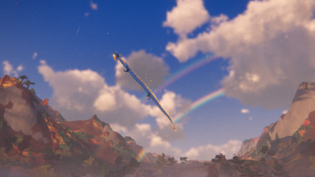
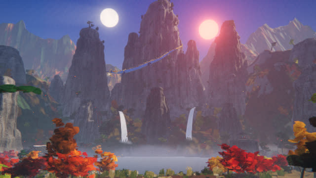
다른 주제 스타터
같은 엔진으로 전혀 다른 주제를 브리프부터 만든 최소 영화입니다. 새 영화는 이 폴더를 복사해 시작합니다.
검증 캐스트 시트 · 몸 검사
생물은 모든 방향에서 한 마리로 보여야 합니다. 캐스트 시트로 앞 · 좌우 3/4 · 좌우 옆 · 위 · 아래 · 뒤를 확인하고, check.mjs가 영화 전체에서 몸의 꺾임 · 뒤집힘 · 뒷걸음과 프레임 결정성을 검사합니다.
실제 작품
이 스킬은 이 레포에서 예제 「청룡 · 여의주」를 만들며 다듬었습니다. 출처는 Chetaslua의 赤龍 · Crimson Loong입니다.
링크
- SKILL.md 워크플로 · 규칙 · 계약
- 폴더 lib · scripts · references · starter · examples
- README.md 빠른 시작
- references/BRIEF.md 주제 → 브리프, 검토 기준
- references/LOOK.md 이 스타일을 이루는 것
- references/KIT.md 모든 빌더와 옵션
- references/CREATURE.md 몸 설계 · 검사 · 캐스트 시트
- references/SOURCE.md 출처에서 배운 것과 가져오지 않은 것
- references/LESSONS.md 겪은 문제와 해결